<div style="position: fixed; top: -90px; z-index: -99; width: 100%; height: 100%" class="heroVideo"><iframe frameborder="0" height="100%" width="100%" src="https://youtube.com/embed/YPydEfw0wHE?autoplay=1&amp;controls=0&amp;showinfo=0&amp;autohide=1&amp;modestbranding=1&amp;disablekb=1&amp;loop=1&amp;playlist=YPydEfw0wHE"></iframe></div><div class="heroOverlay"></div><section data-anchor="ichack" class="section heroSection"><div class="pure-g-r"><div class="pure-u-1-2"><div class="pure-g"><div class="pure-u-5-6 center"><div class="hero-logo"></div></div></div></div><div class="pure-u-1-2"><div class="pure-g"><div class="pure-u-5-6 center"><div class="hero-catch-phrase"><h2>Imperial College London's <br/>Annual Hackathon</h2></div></div></div></div></div></section>